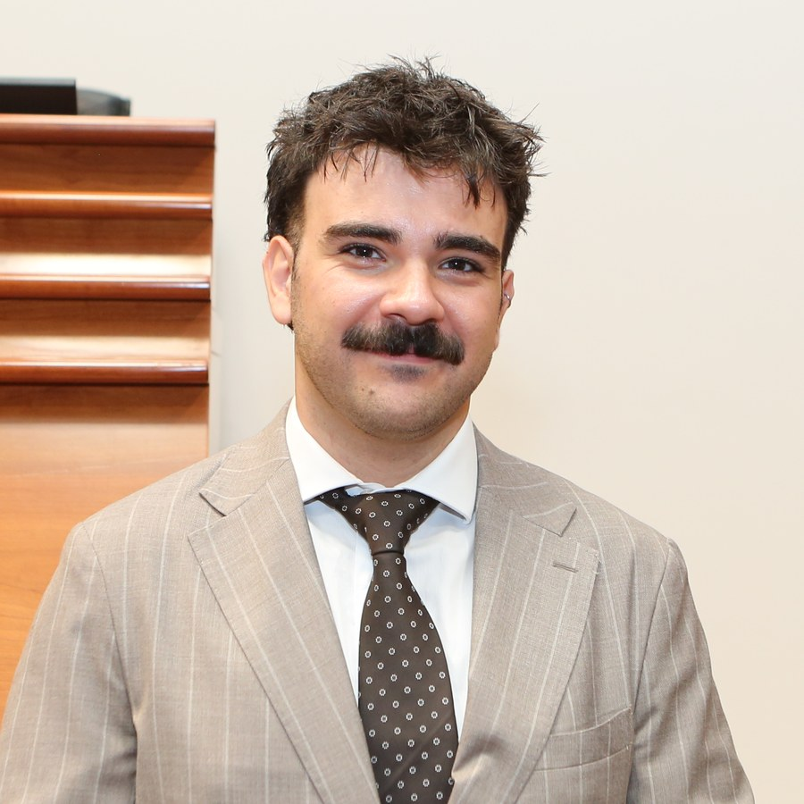

MSc student in AI & Machine Learning
mariocostabile05@gmail.com|LinkedIn|GitHub|Portfolio|Rende (CS), Italy

Computer Engineering graduate of the University of Calabria, currently enrolled in the MSc in Artificial Intelligence & Machine Learning. Hands-on skills in web and mobile development, deep learning and Explainable AI, built through my studies and thesis. Seeking an internship or first role in AI/ML or software development.
Teamwork, reliability, methodical approach, fast learning, adaptability to different contexts and technologies.
Italian · native English · fluent